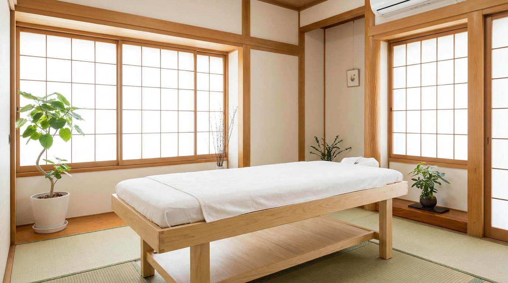

ASAHIMACHI SEITAI
肩こり・腰痛・姿勢の歪みに、一人ひとりの身体に合わせた施術を。旭町で地域の皆さまの身体を支えます。

骨盤・背骨の歪みを整え、姿勢の改善と痛みの軽減を目指します。
デスクワークによる肩こり・腰痛に、丁寧な手技でアプローチします。
出産で緩んだ骨盤を整える、産後ママ向けの施術も行っています。
施術前に身体の状態をしっかり確認し、原因からアプローチします。
柔道整復師など国家資格を持つ施術者が担当します。
旭町エリアで駐車場も完備。お仕事帰りにも通いやすい立地です。
CONTACT
ご予約・お身体のご相談はLINEからお気軽にどうぞ。